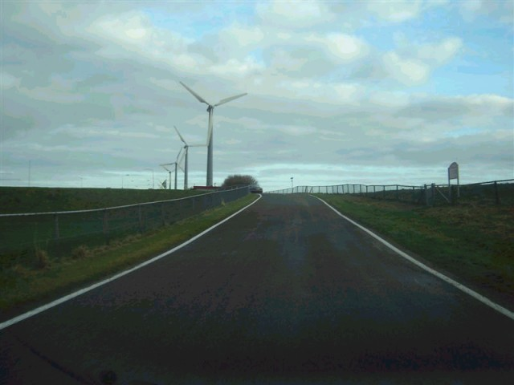
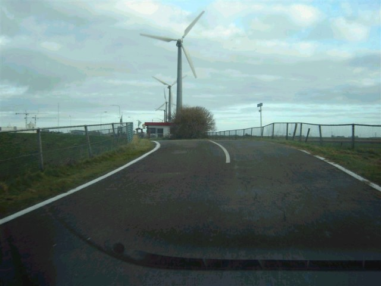
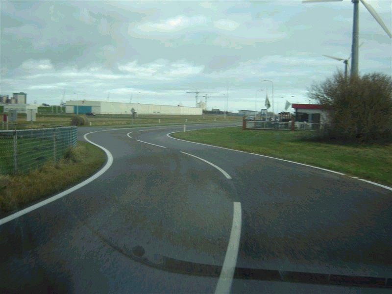
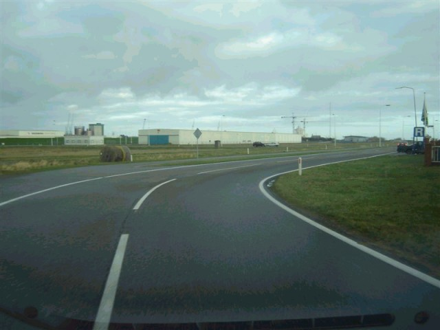
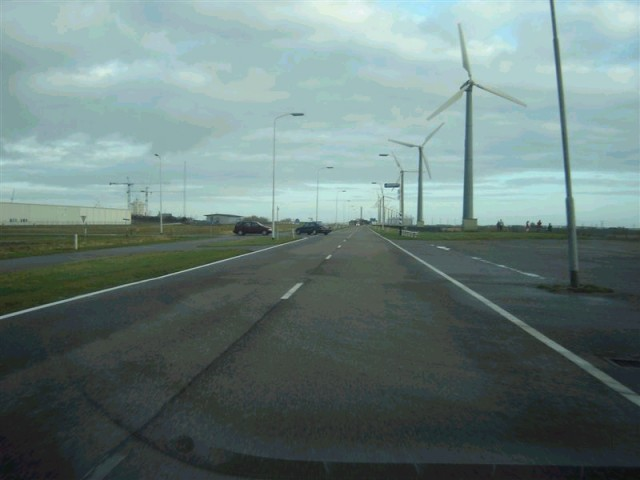
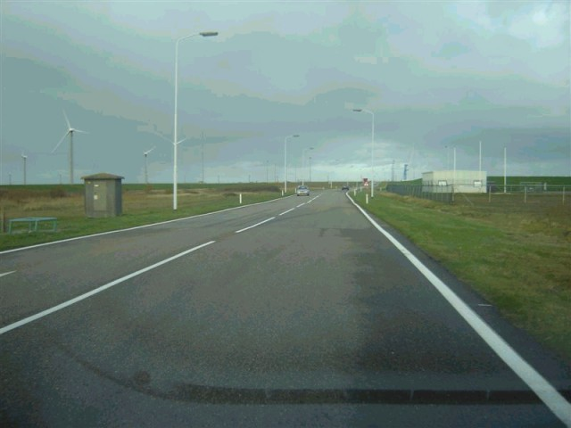

Numbers and arrows on the map represent the location and direction in which the photos were taken. Click the hyperlinks above to view the photographs.
Eemshaven - Kwedler ("Dijkgat" to Start/Finish)
|| Contents | Westereemsweg | Ranselgatweg | Meeuwen Bocht | Meeuwenstaartweg | Hairpin | Kwedler ||
Numbers and arrows on the map represent the location and direction in which the
photos were taken. Click the hyperlinks above to view the photographs.
Return to racingcircuits.net's Photo Archive Main Index

36 - Towards the "S Bocht", this
goes up-hill.

37 - Almost on the dyke before the "S
Bocht".

38 - The "S Bocht".

39 - In the "S Bocht".

40 - The "Kwelder Bocht", the last
corner before Start/Finish.

41 - Just after the "Kwelder
Bocht", looking to Start/Finish.
Photographs and text ©Roelard Smit. Reproduced here with kind permission.